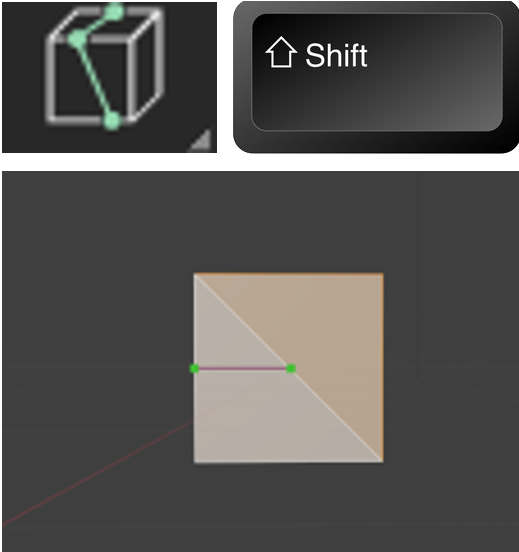

~The Knife Tool~
3/24/2025
Introduction to the Knife Tool
Yikes, now how do I get out of this tool!
To Lock the tool into a Mid -Point Mode
Splitting the Object based on your View
Displaying Distance and Angle measurements
Removing Sections of the object
Introduction to the Knife Tool
So, in order to see this tool in the tool box panel, again we must be in Edit mode.
Your Knife tool will look like this in the tool box. The K key on the keyboard is the hot key for this tool.
So, just bring your cube into edit mode, and turn on the knife tool, by clicking on it. Then click on a corner of your cube, like this. You will see this green square appear.
Then just click on another corner of the cube like this. You will see this second square appear.
Yikes, now how do I get out of this tool!
This tool is different from other tools, where all you have to do is to click that left mouse button and your action is accepted, and the tool will release your mouse. This tool is different, and this behavior can be quite maddening for first time users who find that this tool simply will not let go when you want it to.
In order to accept this cut, and let your mouse go, you must hit the ENTER key.
This will give you a cut and give you this additional geometry for your cube.
If you turn on Face mode you can see that we have 2 distinct different faces.
NGons
The thing about this tool is that when you use the knife tool and start to split things up like this, you can create Ngons. Ngons are surfaces in Blender that do not have 4 sides, and do not behave in the same way that a quad (4 -sided faces) would react in Blender.
For instance, if we attempted to now try and do a loop cut on this face the loop cut would skip over the face that we just sliced up; since it does not any longer have 4 sides, and Blender does not know what to do with it. Notice how the loop cut does not completely go around the cube, and just skips over the face that has a knife cut in it. So, just be aware this once you start slicing and dicing. You don’t want to be caught off - guard from some unintended consequences.
Extruding the New Geometry
But you will find that if you now, either hit the E key or slam the Extrude button tool, we can extrude this separate face that we created.
Free clicking on the face
You can also just start clicking inside of the face to create any type of cut that you want. Just remember that when you want to come out of this tool, you must use the Enter key to release it from your mouse.
Notice when you hit the Enter key, that it will create additional geometry to attach it to the sides and stabilize your cut.
Now you can take the Extrude tool and extrude it downward into the object like this.
And we can even scale in that inside face if we want.
To Cancel a Cut
If you start making a bunch of cuts and you decide you do not like what you just did then you can hit the Escape Key, before you hit the Enter key, because hitting the Enter key instead, would accept the mess you just did.
To Lock the tool into a Mid -Point Mode
You can hold down the shift key with the knife cut tool and this will center the cut at the mid-point of an edge. So, if you quickly want to find the center of the edge you will use the shift key with the knife tool.

Splitting the Object based on your View
You can spin your object around in the viewport and the knife tool will cut the object based on your view. So, if you are in front view, it will only cut the front face, but if you go into User Perspective view and turn it slightly to the side where you see two faces then your cut will hit both of those faces.
Setting an Angle Constraint
When you hit the K key to go into the Knife tool you can also tap the A key to go into an angle constraint.
You could also tap in a specific angle setting at the same time. So, hit the K key, hit the A key and then hit 45, and your angle would be exactly 45°.
Cut Through
You also have an option for Cut through. So, instead of just cutting the section of the cube that you can see, you can actually slice through the entire box. Keep in mind though that just because this option is available to you, there is another option available to you to slice through your box, which I will be demonstrating shortly. But let’s start with this one. Both ways are pretty good.
You can hit the K key and then tap the C key; this will bring you into Cut Through mode.
Now if you turn your box around you will find that this method cut through the entire box. So, with cut through mode, whether you can see it or not, the knife is cutting through the entire object.
Displaying Distance and Angle measurements
After hitting the K key, you can hit the S key and this will allow you to see what the measurements of the Distance of the cut as well as the angle.
The Bisect Tool
Remember I said there was another way to create a cut through a box besides using the K and the C key in unison? Well, this tool is it. It is called the Bisect tool and it is located under the Knife tool. Just tap on that little arrow in the bottom right-hand corner of the knife tool to get to it.
Warning -In order to start up this tool, you must have something selected on the object. If you don’t you will receive an error message.
After clicking on the box, you can then click on this front face with this tool and you will notice this funny looking yellow arrow show up.

After clicking on the box if you drag out your line from outside of the box, the arrow will show up in outer space, as demonstrated in this next illustration.
Anyways, once you have created your cut, you then have access to the Last Operation Dialog box at the bottom of the screen.
The First 3 textbox, will move this funny looking arrow around the box. You will notice it is set up to move it in the X, Y or Z axis for more specific placement.
The Next 3 Textboxes will actually rotate this Arrow around in 3D space.
Removing Sections of the object
You can also use this tool to remove sections of the object. This is done with the checkboxes underneath of it.
Clear Inner
Clear Outer
The Fill Option
To show the fill option, let’s start with a fresh cube, without all the weird cuts in it, to show what this can do.
Now we used the Clear Outer, to get rid of the side, on the right of the arrow.
Now click on the Fill checkbox, and we have a new face based on the slant of the cut.
Well, that is about it for the Knife tool, you can just keep on working with it to see what sort of objects you can cut out with it.